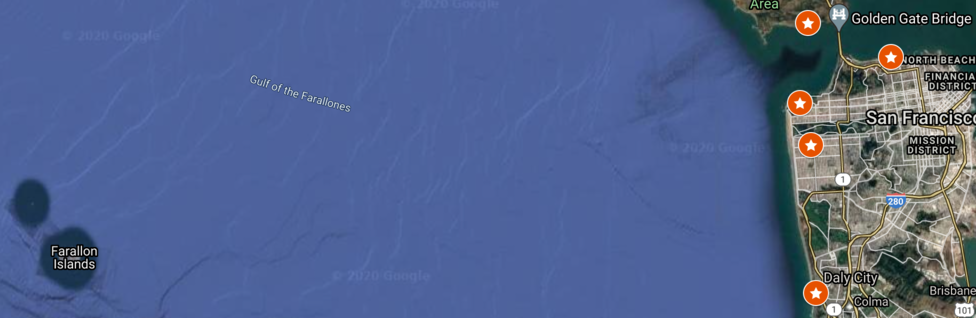
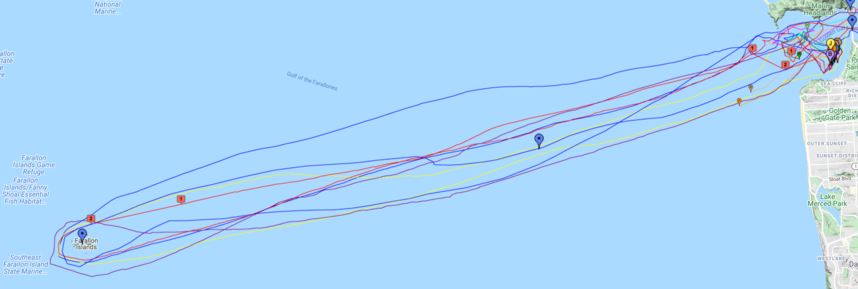
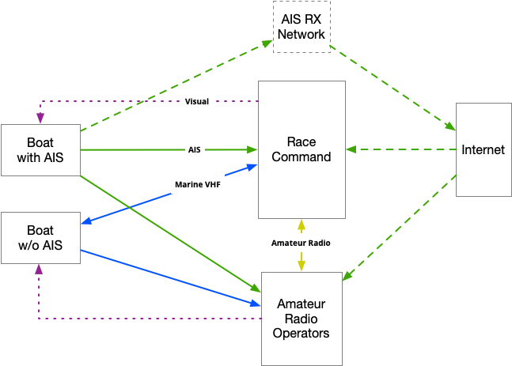
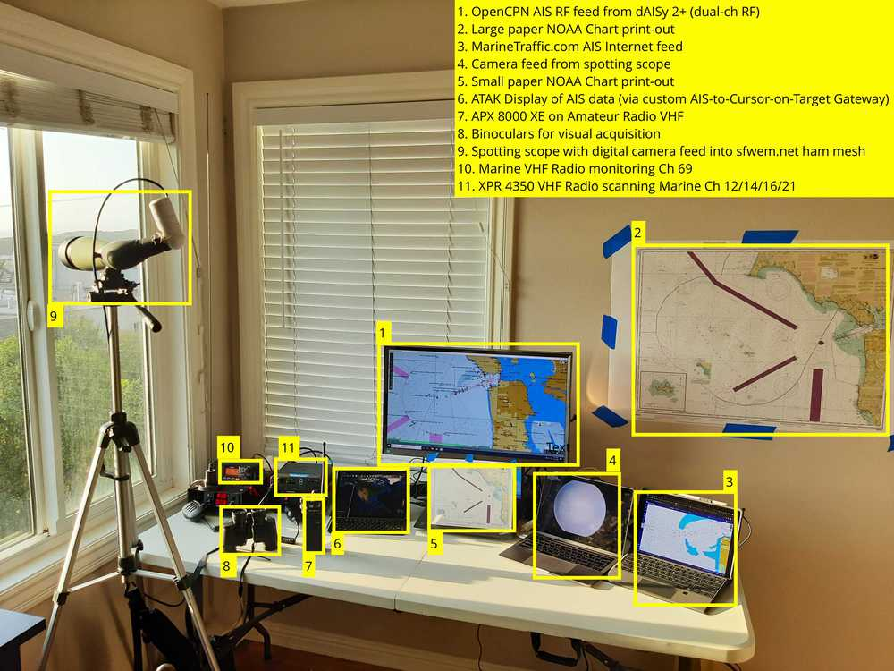
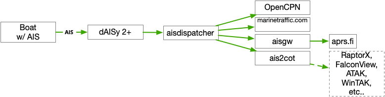
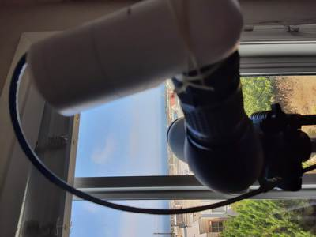
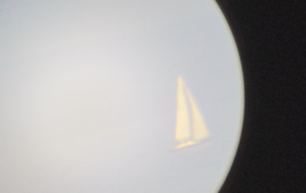
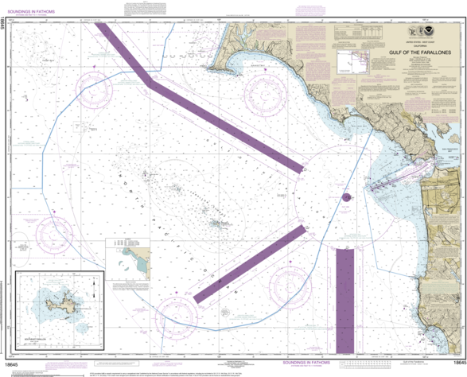

Having you help us execute the roll calls was super-helpful, and helped us account for and ensure the safety of all participants. - Truls Myklebust, Commodore, BAMA
On Saturday, September 19th, 2020, the Bay Area Multihull Association (BAMA) held their 41st annual Double Handed Farralons Race from San Francisco's Golden Gate around the South Farallon Islands, and back. The race's 55 nautical mile (63 mile) round-trip into the open ocean presented communications & tracking challenges, and the nature of the Northern Pacific Ocean's weather persistent safety challenges to all mariners. In all the race is 55 nautical miles (63 ground miles) round-trip, or approximate 25 nautical miles one-way.
For this year's race, Kent Carter AJ6NI enlisted the support of the Bay Area Amateur Radio community to provide Auxiliary Spotting for the event. Auxiliary Spotting Operators were to monitor Marine VHF Radio & AIS Data, and provide visual line-of-sight spotting. To provide diversity, Auxiliary Spotting Operators were positioned along a 10 mile stretch of the Pacific Coast between Daly City & the Marin Headlands. This allowed coverage of roughly 107 square nautical miles (143 sq. miles):

Boats participating in the race could start at any time after 8 AM Local Time, and were expected to be back within the San Francisco Bay (east of the Golden Gate) before Midnight.
Beginning at Sunset (around 7:30 PM Local Time) and recurring hourly, Race Command would conduct a roll-call of boats still on the course via Marine VHF Radio Channel 69 (156.4750 MHz). Boats were to respond with two pieces of information:
Boats that were transmitting accurate & timely AIS Data were not polled in the hourly roll-call. If a boat's AIS signal degraded, they would be polled by Marine VHF Radio. At the end of each roll-call period Race Command would provide updated Situational Awareness (SA) to the United States Coast Guard (USCG).

Auxiliary Spotting Operators were expected to monitor the hourly after-dark roll-calls and, in the event that Race Command lost Marine VHF Radio contact with a boat, provide a relay of what the Auxiliary station was able to intercept of the boat's transmissions.
Additionally, Auxiliary Spotting Operators were providing ground-truth relays of AIS Data and Visual acquisition of boats via long range optics.

Participating Amateur Radio Operators include:
Special Thanks goes out to the San Francisco Radio Club for allowing us the use of the W6PW VHF Repeater for the duration of the event.
My local station provided Marine VHF, Marine AIS and Visual spotting capabilities as depicted in the diagram below:

At my AIS monitoring station, a local AIS RF feed was provided by the dAISy 2+ dual-channel AIS Receiver, with AIS data decoded and downsampled by ais-decoder. AIS Data was then distributed via UDP over a local IP network to several destinations, including a local OpenCPN display, with the appropriate charts for the Gulf of the Farallones loaded. Additional AIS Data feeds were provided to aprs.fi via the aisgw tool, and to ATAK via the ais2cot (AIS to Cursor-on-Target) tool.

Inspiration for the AIS Data routing setup came from Dr. Gary Kessler's "AIS Research using a Raspberry Pi" page.
An IP Camera was affixed to the sight on the Spotting Scope, allowing real-time video sharing via the San Francisco Wireless Emergency Mesh.
"Creative" Mesh IP Camera mounting onto Spotting Scope: 
A boat as seen in the Spotting Scope's Mesh IP Camera: 
